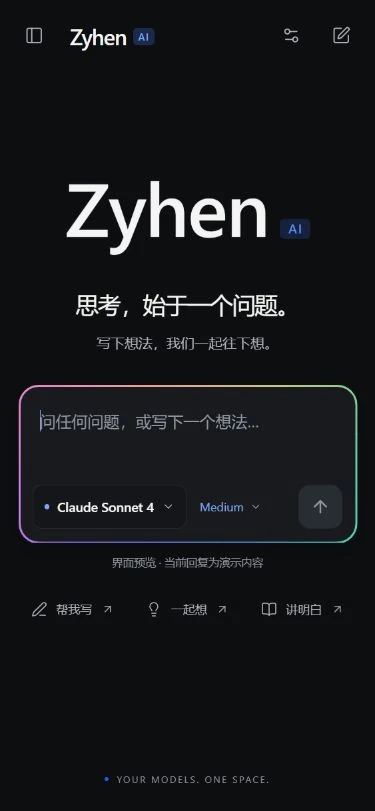
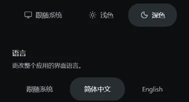
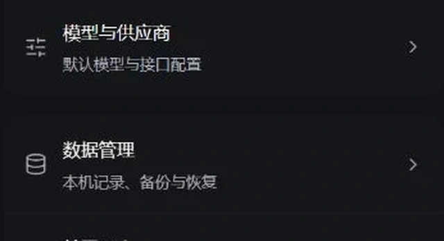
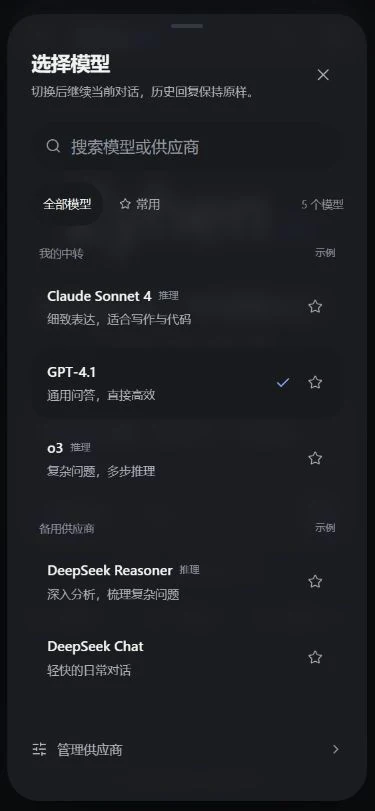

你的模型，
自己选。
填入服务地址和密钥，App 会自动获取模型列表。点标签或左右滑动截图，预览手机界面。



安装与更新
已经装了旧版？
直接下载新版 APK，打开后在安卓系统弹窗里点「更新」。保留旧版即可延续本机聊天记录和设置。首次安装则点「安装」。
以后怎么更新？
打开 App 的「设置 → 关于 Zyhen → 检查更新」。也可以点「从本机 APK 更新」选择已下载的新包。若提示填写更新源，可复制本站的更新清单地址。
iPhone 可以下载吗？
本站目前提供安卓 APK。iPhone 暂无公开安装版，不能安装这个文件。